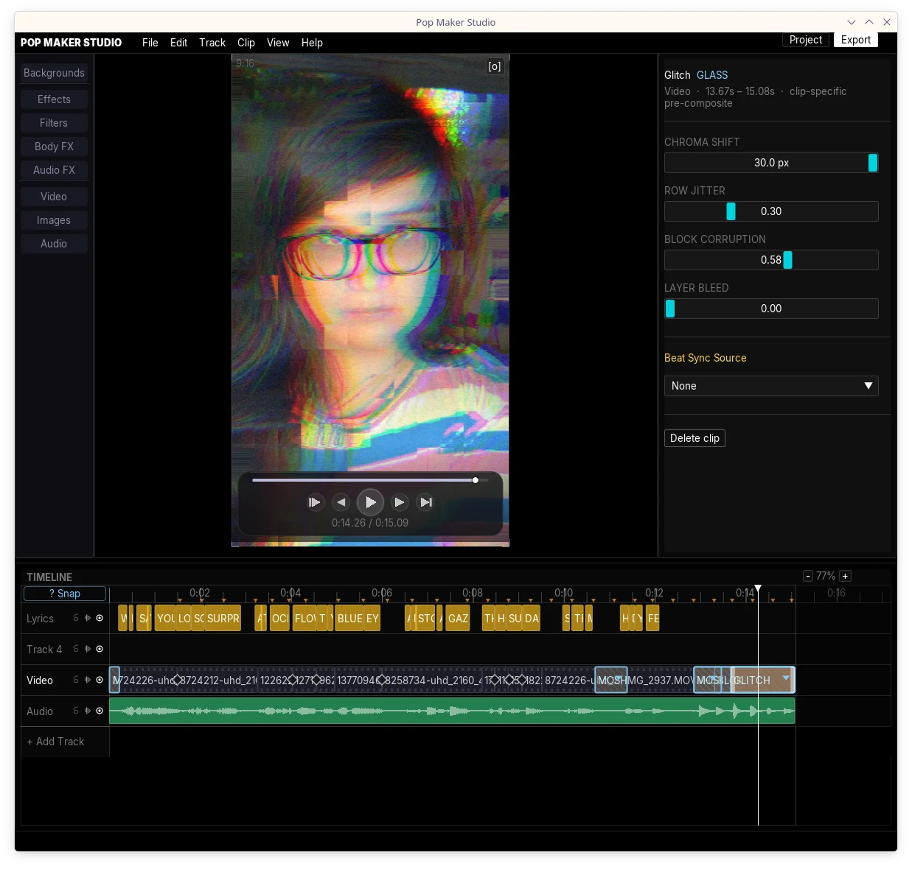
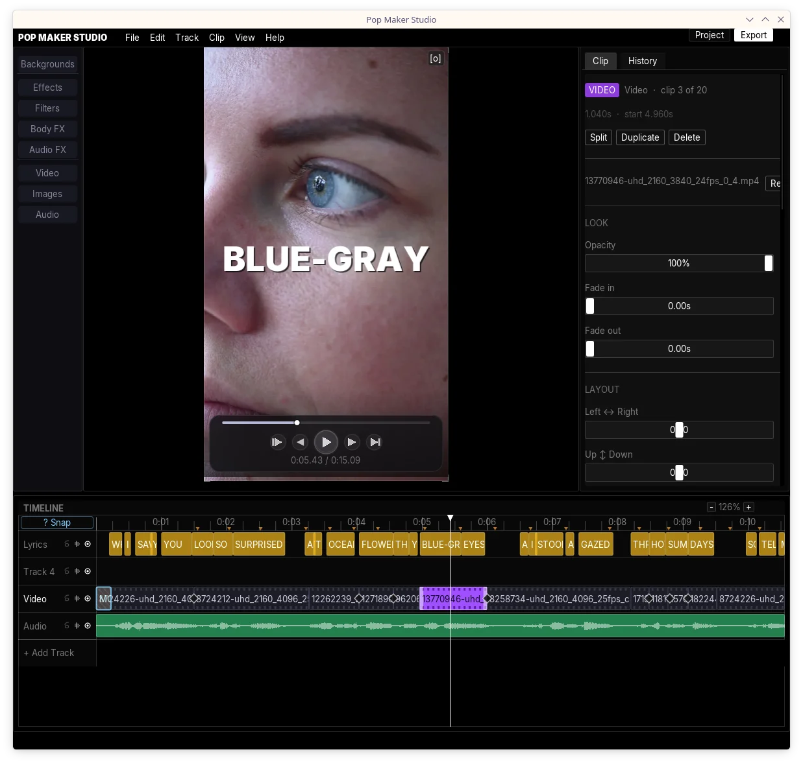
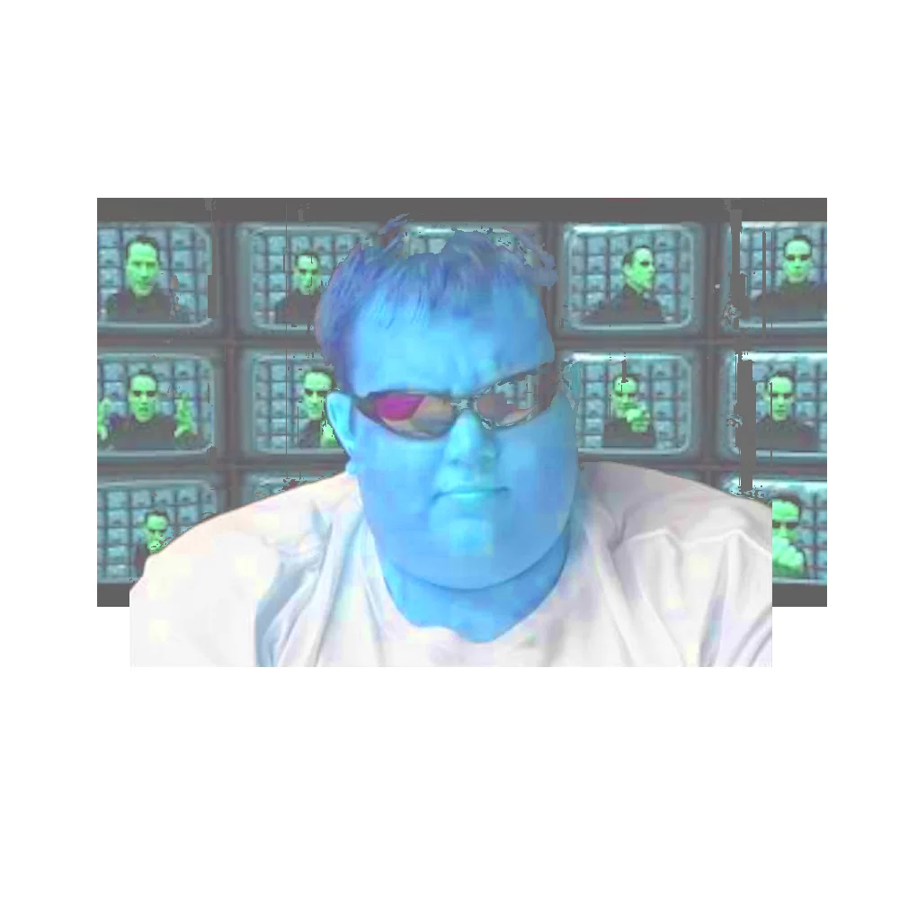
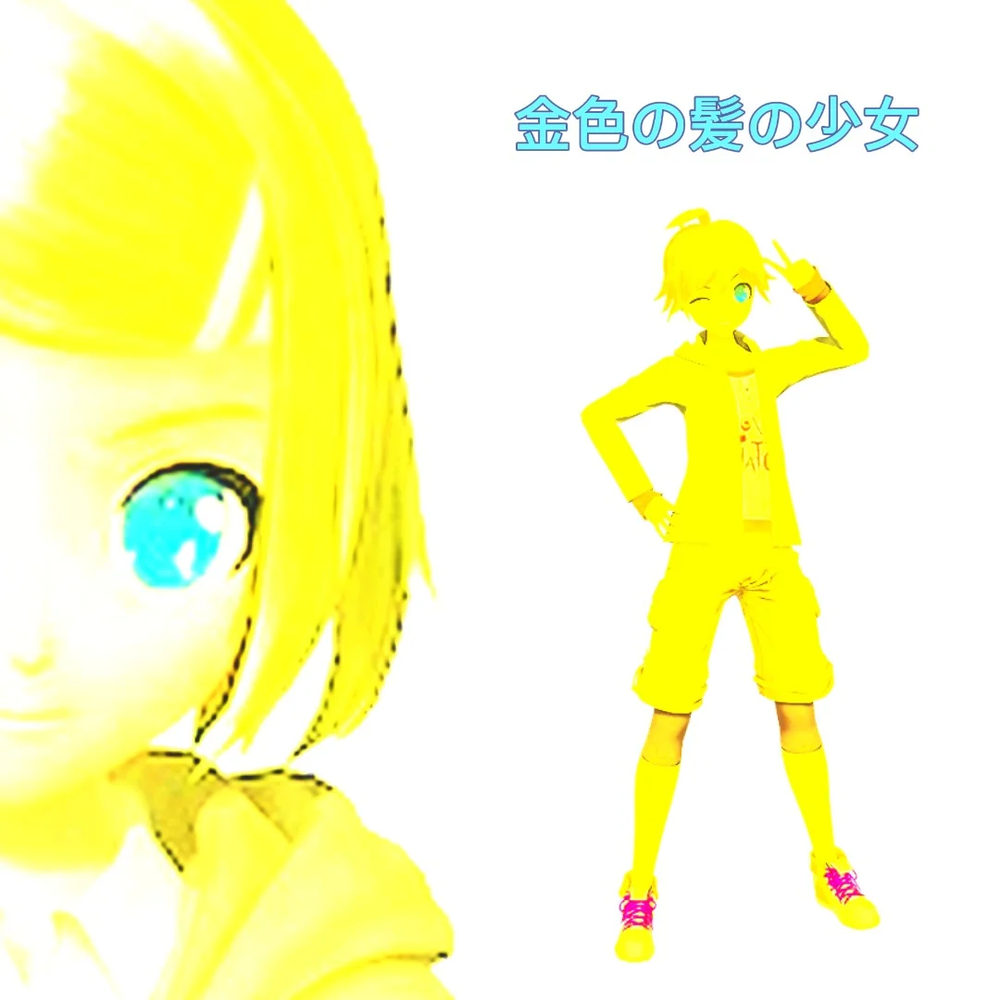

At a glance
11
Projects
2
Research papers
3
Artists
74KB
Smallest product
Index
11 projects
Development.
Music tools, AI installations, and web apps.
01
Pop Maker Studio
Local-first video editor with MCP server control. Claude and Codex friendly. C++ from scratch.
C++ / GLSL · Beta↗
02
A Digital Prayer
A confessional cross that prays in the voices it steals. AI Psychosis Summit 2 · NYC.
Installation · Beta↗
03
Silvertune
An Industry-Standard, 100% FLOSS Autotune. Only 74KB."
CLAP · Live↗
04
Silvertune Web
Real-time pitch correction in the browser. No install.
Rust + JS · Live↗
05
Silvertune Pedal
Silvertune in a pedal for live performance autotune with no computer.
Embedded · Live↗
06
Lyric Video Blender
Blender addon that separates vocals, transcribes lyrics with AI, and generates animated lyric videos.
Blender Addon · Stable↗
07
Cultural Extremity Index
How extreme are you?
JavaScript · Live↗
08
Wickrunner
The ONLY competitive stock trading game.
TypeScript · Live↗
09
T4 Code
Observability and control workspace for Oh My Pi agents — macOS, iOS, and terminal.
macOS · iOS↗
10
T4 Code — Linux
Native Linux client in Swift + GTK4 — live sessions, subagents, terminal, files, and a browser pane, in Rosé Pine Dawn and Moon.
Swift · GTK4↗
11
NullTorch
A hostile-file benchmark for AI coding models. Six models write a pure-C++ PyTorch .pt reader from scratch.
C++17 · Live↗
Development
Pop Maker Studio.
Local-first video editor with MCP server control. C++ from scratch. Claude and Codex friendly.



A complete video editor written entirely in C++ from scratch — no Electron, no Python runtime, no cloud. Cut and composite footage, animate text and subtitles with GPU-accelerated GLSL shaders, apply effects, and export with pixel-identical preview. All ML inference runs fully on-device via ONNX Runtime: vocal separation with MDX-Net, background removal with u2net, whisper.cpp transcription down to the millisecond. Controllable via MCP server: Claude and Codex can drive the timeline directly. One binary. Zero dependencies.
Video
Tech Specs
| Format | Desktop App · MCP Server |
|---|---|
| Language | C++ / GLSL |
| Platform | Linux / macOS / Win |
| Status | Beta |
| License | GPLv3 |
Research
You can read a voice model's vocal range straight off its weights
When you use an AI voice model to sound like someone else, there's one knob you always end up fighting: pitch. If the model was trained on a deep voice and yours is high, you have to guess. Shift down an octave? Convert, listen, try again. Everyone does it by ear, and it's the single most common "why does this sound bad."
You don't have to guess. The model already knows its own range. It's sitting in the weights, and you can read it out in a microsecond, without playing a note.
Why the range is in there
These models (RVC) handle pitch with a small lookup table called a pitch embedding: 256 slots, one per pitch step from low to high, each holding a learned vector. A slot only changes during training when the training audio actually hits that pitch. If the voice never sang low, the low slots never get touched.
And every voice model is fine-tuned from the same shared starting point (a "base" model). So line up a finished voice's pitch table against that base, look at which slots moved, and you've got a map of exactly which pitches the voice was trained on. That map is its vocal range.
How you read it (it's basically subtraction)
The code is short. At export time (rvc_onnx.cpp:1359-1410):
- Subtract the base pitch table from the voice's, slot by slot.
- For each slot, measure how far it moved (the length of that difference).
- Smooth it a touch, then keep the slots that moved more than ~30% of the biggest mover.
That's the range: a 256-slot "trained / not trained" map.
Auto-key is then just arithmetic (vc_onnx.cpp:316-381). The input's pitch over time is already a list of numbers, and you measure it once anyway as a normal first step. Shifting it an octave is multiplying those numbers; checking "unshifted vs. up vs. down" is counting how many of them fall inside the trained map. You pick the shift with the best count, and ties stay put. Nothing is converted or played to decide. The choice happens on the pitch numbers, before any audio is generated.
The payoff: you sing in your natural pitch and it lands you in the model's range automatically. A high voice into a model trained on a deep one just works, with no knob.
The part that isn't about audio
Nothing here is specific to voices. Any model with an embedding lookup, like the word table in a language model or the class table in a classifier, has the same property: a row only moves if training touched it. Diff a fine-tuned model's embedding against its base, and the rows that moved tell you what the fine-tune actually saw. Vocal range is just the case where that map happens to be immediately useful, and where you can turn it into a feature people press a button on.
Related work
Other people read things out of weight differences too, for different goals: some train a model to describe how a fine-tune changed its behavior; others reconstruct training examples from gradients. This is the simple, narrow end of that street. It reads one concrete number (a range) straight off the embedding, with subtraction and a threshold, and uses it to fix a real annoyance.
| Domain | RVC Voice Models |
|---|---|
| Method | Pitch Embedding Diff |
| Cost | Microseconds · No Audio |
| Application | Auto-Key Selection |
| Source | Pop Maker Studio |
3 artists
Artists.
Epsilver, Ekioze, Depravity Girlz.




Say To MeEpsilver